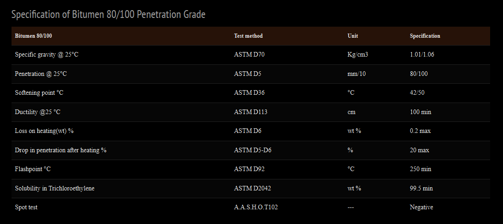

What Does Bitumen 80/100 Grade Mean? – Iran Bitumen Supply │ IBITMCO
Bitumen Penetration Grade 80/100 refers to a bitumen with a penetration value between 80 and 100 (0.1 mm) at 25°C. This penetration range indicates a softer, more flexible bitumen, making it ideal for moderate to cold climates where elasticity and crack‑resistance are essential.
Description of Bitumen Penetration Grade 80/100
Bitumen 80/100 is a standard paving‑grade bitumen widely used in road construction, hot mix asphalt (HMA) production, and asphalt pavement manufacturing. At Iran Bitumen Supply │ IBITMCO, our Bitumen 80/100 is produced from high‑quality vacuum residue (short residue) obtained through the fractional and vacuum distillation of crude oil. Penetration‑grade bitumens are classified based on penetration value and softening point, with the designation determined solely by penetration range.
Bitumen 80/100 exhibits thermoplastic behavior, softening at high temperatures and hardening at lower temperatures. This temperature‑viscosity relationship is essential for evaluating performance characteristics such as:
- ✔ Adhesion
- ✔ Rheology
- ✔ Durability
- ✔ Application temperature
The stiffness and temperature sensitivity of Bitumen 80/100 depend on the crude oil source and refining method. As a semi‑soft penetration grade, it is widely used in regions requiring enhanced flexibility and resistance to cracking. Bitumen 80/100 is also a base material for many other bituminous products and is one of the most commonly used grades worldwide.
Applications of Bitumen Penetration Grade 80/100
Bitumen 80/100 supplied by Iran Bitumen Supply │ IBITMCO is suitable for:
- ✔ Road construction and highway surfacing
- ✔ Hot mix asphalt (HMA) for base and wearing courses
- ✔ Pavement rehabilitation
- ✔ Roofing and waterproofing membranes
- ✔ Pipe coating
- ✔ Soundproofing materials
- ✔ Bitumen emulsions and sealants
- ✔ Automotive industry applications
- ✔ Bridge deck waterproofing
- ✔ Airport runways
- ✔ Sports surfaces
Its flexibility makes it ideal for cold and moderate climates where asphalt must withstand thermal movement.
Packaging Options for Bitumen 80/100
At Iran Bitumen Supply │ IBITMCO, Bitumen 80/100 is available in multiple packaging formats:
- ✔ New steel drums (150 kg, 180 kg, 220 kg)
- ✔ Jumbo bags (1 MT)
- ✔ Bulk shipments (upon request)
Packaging selection depends on project requirements, transportation method, and handling preferences.
Density of Bitumen Penetration Grade 80/100
Density is a key physical property influencing how bitumen behaves during storage, transport, and application. For Bitumen 80/100, the density typically ranges between: 1,000 – 1,050 kg/m³. This density range ensures optimal performance in asphalt mixtures, contributing to durability, stability, and long‑term pavement strength.
Quality & Safety Guarantee – Bitumen Penetration Grade 80/100
Iran Bitumen Supply │ IBITMCO guarantees the quality of Bitumen Penetration Grade 80/100 through strict quality control procedures. We work with independent international inspection companies to verify the quality and quantity of each shipment during loading. Our QC team conducts batch‑wise testing before dispatch to ensure full compliance with ASTM standards. This ensures that every shipment meets the performance requirements demanded by modern road construction and industrial applications.
Supplier of Bitumen 80/100 – Iran Bitumen Supply │ IBITMCO
With extensive experience in the global bitumen market, Iran Bitumen Supply │ IBITMCO supplies Bitumen 80/100 to customers across Asia, Africa, Europe, India and the Middle East. We offer flexible shipping options, including bulk cargo, steel drums, and jumbo bags, delivered to ports worldwide.
How to Order Bitumen 80/100
To receive a quotation and order confirmation, please provide:
- ✔ Required quantity (MT)
- ✔ Preferred packaging type
- ✔ Destination port and country
- ✔ Incoterms (FOB, CFR, or CIF)
- ✔ Payment terms
Upon receiving your details, we will send a formal quotation, Proforma Invoice, loading plan, estimated delivery time, and documentation list.

Specification of Bitumen 80/100